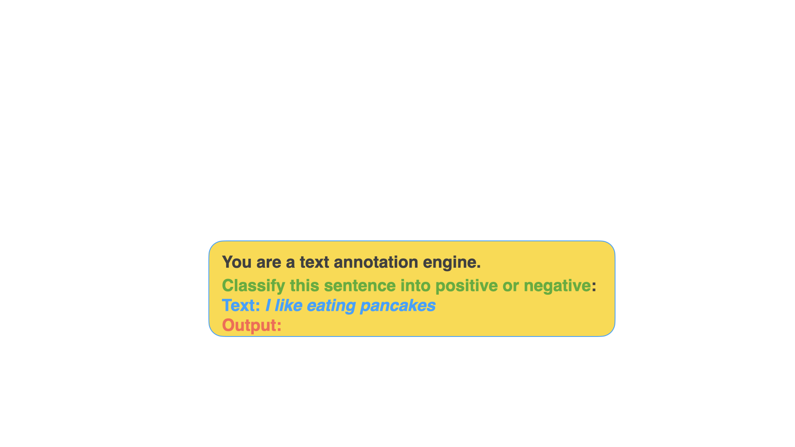
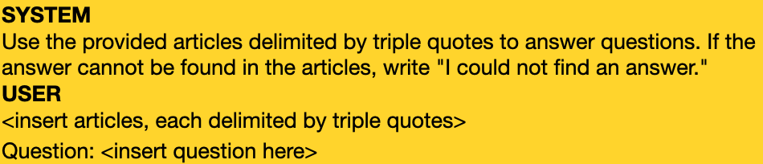
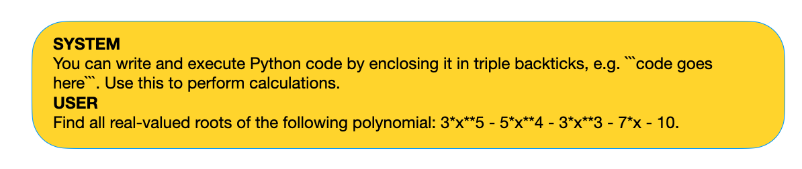

background-image: url(../notebooks/assets-resources/oreilly-background-template.png) --- # Table of Contents ## Modules 1. Introduction to Prompt Engineering -- 2. Prompt Engineering Techniques -- 3. Prompt Engineering Experiments --- class: center, middle # Module #1 ## Introduction to Prompt Engineering --- # What is Prompt Engineering? -- - Prompt engineering: Discipline for engineering prompts -- - The goal is to __design good prompts__ -- - <span style="background-color: #FFDB58"> Process for developing prompts that yield high performance in a task. </span> --- # Why Prompt Engineering? -- - LLM's outputs are uncertain -- - We need to empirically search for the best way to extract the best output/answer from a given model --- # What is a Prompt? -- - Prompt is text that conveys the user's intention to the LLM. -- - It can be a question, an instruction, request. --- # Prompt Basics ## Components of the prompt  --- # Prompt Basics ## Components of the prompt: <span style="color: green">instruction</span> <img src="../notebooks/assets-resources/prompt-basics/prompt-basics.005.jpeg" width="800px" style="margin-left: -20px; margin-top: -40px;"> --- # Prompt Basics ## Components of the prompt: <span style="color: green">instruction</span>, <span style="color: black">context</span> <img src="../notebooks/assets-resources/prompt-basics/prompt-basics.006.jpeg" width="800px" style="margin-left: -20px; margin-top: -40px;"> --- # Prompt Basics ## Components of the prompt: <span style="color: green">instruction</span>, <span style="color: black">context</span> <span style="color: #0d8eb9">input data</span> <img src="../notebooks/assets-resources/prompt-basics/prompt-basics.007.jpeg" width="800px" style="margin-left: -20px; margin-top: -40px;"> --- # Prompt Basics ## Components of the prompt: <span style="color: green">instruction</span>, <span style="color: black">context</span> <span style="color: #0d8eb9">input data</span> , <span style="color: red">output indicator</span> <img src="../notebooks/assets-resources/prompt-basics/prompt-basics.008.jpeg" width="800px" style="margin-left: -20px; margin-top: -40px;"> --- # Prompt Engineering Guide ## OpenAI's Guide for Building Good Prompts -- - __Strategy 1: Write clear instructions__ -- - <span style="color: red">Bad: </span> Who’s president? -- - <span style="color: green">Better:</span> Who was the president of Mexico in 2021? <p style="font-size: 14px; margin-top: 10px;"> <sup>[3]</sup><a href="https://platform.openai.com/docs/guides/prompt-engineering">OpenAI's Prompt Engineering Guide</a> </p> --- # Prompt Engineering Guide ## OpenAI's Guide for Building Good Prompts - __Strategy 2: Provide reference text__ --  <p style="font-size: 14px; margin-top: 10px;"> <sup>[3]</sup><a href="https://platform.openai.com/docs/guides/prompt-engineering">OpenAI's Prompt Engineering Guide</a> </p> --- # Prompt Engineering Guide ## OpenAI's Guide for Building Good Prompts - __Strategy 3: Break tasks into subtasks__ -- <img src="../notebooks/assets-resources/prompt-strategy3.png" alt="Prompt Strategy 3" style="width: 600px;"/> <p style="font-size: 14px; margin-top: 10px;"> <sup>[3]</sup><a href="https://platform.openai.com/docs/guides/prompt-engineering">OpenAI's Prompt Engineering Guide</a> </p> --- # Prompt Engineering Guide ## OpenAI's Guide for Building Good Prompts - __Strategy 4: Give the model time to think__ -- <img src="../notebooks/assets-resources/prompt-strategy4.png" alt="Prompt Strategy 4" style="width: 400px;"/> --- # Prompt Engineering Guide ## OpenAI's Guide for Building Good Prompts - __Strategy 5: Use external tools__ --  <p style="font-size: 14px; margin-top: 10px;"> <sup>[3]</sup><a href="https://platform.openai.com/docs/guides/prompt-engineering">OpenAI's Prompt Engineering Guide</a> </p> --- # Prompt Engineering Guide ## OpenAI's Guide for Building Good Prompts - __Strategy 6: Test changes systematically__ -- <img src="../notebooks/assets-resources/prompt-strategy6.png" alt="Prompt Strategy 6" style="width: 400px;"/> <p style="font-size: 14px; margin-top: 10px;"> <sup>[3]</sup><a href="https://platform.openai.com/docs/guides/prompt-engineering">OpenAI's Prompt Engineering Guide</a> </p> --- # Prompt Engineering Template - Define Your Task Clearly - Define the Eval Metric - Generate Candidate Prompts - Experiment - Learning When to Stop Experimenting --- # Define Your Task Clearly -- - Start with a clear and concise definition of what you want to achieve. -- - Ensure that your goal is specific, measurable, and relevant to your needs. --- # Define the Eval Metric -- - Establish criteria for evaluating the effectiveness of your prompts. -- - This could include accuracy, creativity, relevance, or other metrics pertinent to your task. --- # Generate Candidate Prompts -- - Develop a diverse set of prompts that could potentially meet your defined task. -- - Creativity and variety at this stage can lead to more robust findings later. --- # Experiment -- - **Test**: Run your candidate prompts through the intended system. -- - **Evaluate**: Assess the outputs based on your defined evaluation metrics. -- - **Compare**: Analyze the performance of each prompt against others. -- - **Best Candidate**: Determine which prompt(s) best fulfill your task requirements. -- - Tip: Utilize tools like Google Sheets for organized experimentation and tracking. --- # Learning When to Stop Experimenting -- - Recognize the balance between thorough experimentation and practical limitations. -- - Consider factors like: -- - **Token/Cost**: The expense associated with processing each prompt. -- - **Time/Urgency/Priority**: Available time and the urgency of the task. -- - Aim to avoid overengineering, as it can reduce the reusability and practicality of your solutions. --- # Q&A & Summary - __Prompt Engineering__ is the discipline for engineering prompts - __Prompt Engineering__ aims to design prompts that yield high performance across tasks. - __OpenAI's Guide for Building Good Prompts__ includes strategies like writing clear instructions, providing reference text, breaking tasks into subtasks, giving the model time to think, using external tools, and testing changes systematically. - __Prompt Engineering Template__: task, metric, candidates, experiment --- class: center, middle # Module #2 ## Prompt Engineering Techniques --- # Prompt Engineering Techniques - Zero Shot Prompting - Few-shot Prompting - Chain-of-Thought (CoT) - Self-Consistency - Knowledge Generation - Tree of Thoughts (ToT) --- # Zero Shot Prompting -- - Zero-shot prompting is when you solve the task without showing any examples of what a solution might look like -- - One can use this as the first try at a model to see what kind of tasks LLM can already solve out of the box -- - Classify the sentiment in this sentence as negative or positive: Text: I will go to a vacation. Sentiment: --- # Few-Shot -- - Few-shot Prompting: technique where you show a few examples of what a solution might look like. -- - A "whatpu" is a small, furry animal native to Tanzania. An example of a sentence that uses the word whatpu is: We were traveling in Africa and we saw these very cute whatpus. To do a "farduddle" means to jump up and down really fast. An example of a sentence that uses the word farduddle is: -- - Example taken from (Brown et al. 2020) --- # Chain-of-Thought -- - Chain-of-thought (CoT) enables complex reasoning capabilities through intermediate reasoning steps (Wei et al. 2022). -- - Q: I have one sister and one brother. I am 20 years of age. My sister is 5 years older and my brother 2 years younger than my sister. How old is my brother? - A: If I am 20 years of age and my sister is 5 years older, my sister is 20+5=25 years old. If my brother is 2 years younger than my sister, my brother is 25-2=23 years old. The answer is 23 years old. - Q: I have 2 friends, Jack and Sally. Jack is 2 years older than Sally. Sally is 5 years younger than me. I am 17 years old. How old is Jack? --- # Self-Consistency -- <img src="../notebooks/assets-resources/self-consistency.png" width="800px" style="margin-left: -20px; margin-top: -40px;"> --- # Knowledge Generation -- - Knowledge Generation: Generating facts related to the question. -- - Knowledge Integration: Using generated facts to answer the question. -- <img src="../notebooks/assets-resources/knowledge-generation.png" width="700px" style="margin-left: -20px; margin-top: -10px;"> --- # Techniques There are many more prompt engineering techniques that grow in complexity, such as: - ToT (Yao et al. 2023) - Retrieval Augmented Generation (Lewis et el. (2021)) - Automatic Prompt Engineer (Zhou et al., (2022)) - React Prompting (Yao et al., 2022) - Graph Prompting (Liu et al., 2023) - Skeleton of Thought (Ning et al. 2023) - Step Back Prompting (Zheng et al. 2023) ---